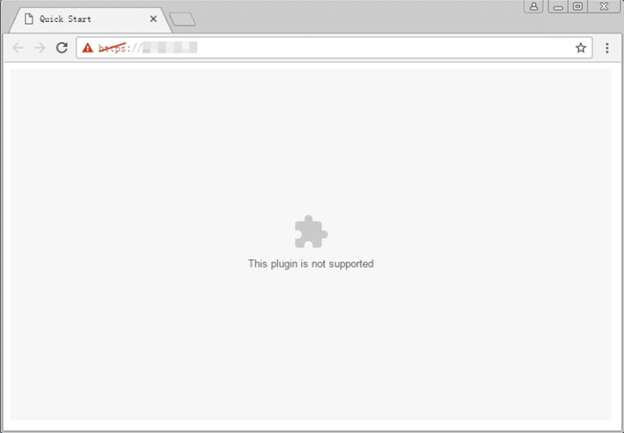
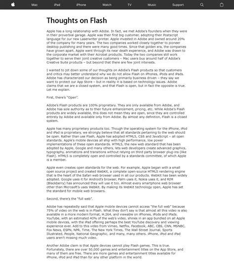

The ubiquity of Flash began to fracture at the turn of the 2010s, catalyzed by a massive paradigm shift in consumer hardware: the rise of the modern smartphone. The turning point was widely publicized by Apple's then-CEO, Steve Jobs, in his 2010 open letter, "Thoughts on Flash." Jobs outlined critical flaws in the software, arguing that Flash was a closed, proprietary system unfit for the mobile era, citing severe battery drain, poor touch-screen optimization, and persistent security vulnerabilities.
While controversial at the time, this critique foreshadowed a broader industry migration toward open web standards. Technologies like HTML5, WebGL, and CSS3 have rapidly matured, offering native browser support for multimedia without the need for clunky third-party plugins.

Consequently, Flash became a massive security liability, frequently plagued by zero-day exploits. Recognizing the inevitable, Adobe announced in 2017 that it would begin deprecating the software. On December 31, 2020, Adobe officially ceased support for Flash Player, actively blocking its execution shortly thereafter and abruptly ending a two-decade era of web history.